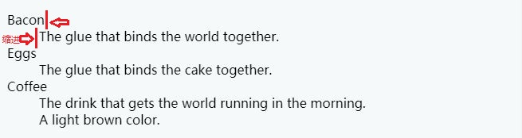

高级文本格式
任务目标:
- 学习如何使用不太知名的HTML元素来标记高级语义特征
描述列表
第三种类型的列表—描述列表 (description list) ：用来标记一组项目及其相关描述，例如术语和定义，或者问题和答案。
<dl>描述列表 (description list)
<dt>描述术语（description term）
<dd>描述说明（description description)
描述术语与描述说明之间会有缩进
<dl>
<dt>Bacon</dt>
<dd>The glue that binds the world together.</dd>
<dt>Eggs</dt>
<dd>The glue that binds the cake together.</dd>
<dt>Coffee</dt>
<dd>The drink that gets the world running in the morning.</dd>
<dd>A light brown color.</dd>
</dl>

引用
块引用
<blockquote>元素：<blockquote>元素包裹一个块级内容（一个段落、多个段落、一个列表等）表示从其他地方被引用。cite属性：引用资源的URL。
浏览器默认样式会增加缩进。
<blockquote cite="https://developer.mozilla.org/en-US/docs/Web/HTML/Element/blockquote">
<p>The <strong>HTML <code><blockquote></code> Element</strong> (or <em>HTML Block
Quotation Element</em>) indicates that the enclosed text is an extended quotation.</p>
</blockquote>

行内引用
<q>引用包裹短文本（一行文字），浏览器默认样式会给文本加双引号表示引用。
<p>The quote element — <code><q></code> — is
<q cite="https://developer.mozilla.org/en-US/docs/Web/HTML/Element/q">intended
for short quotations that don't require paragraph breaks.</q>
</p>
引文
<cite>元素包裹文本表示引用的书的名字，或人的名字，引文默认字体样式为斜体带下划线，颜色默认为紫色。
超链接中的<cite>元素包裹文本，引文默认字体样式为斜体，但是颜色默认为蓝色。
cite属性放到引用元素里面：引用资源的URL。
<p>According to the <a href="https://developer.mozilla.org/en-US/docs/Web/HTML/Element/blockquote"><cite>MDN blockquote page</cite></a>:
</p>
<blockquote cite="https://developer.mozilla.org/en-US/docs/Web/HTML/Element/blockquote">
<p>The <strong>HTML <code><blockquote></code> Element</strong> (or <em>HTML Block
Quotation Element</em>) indicates that the enclosed text is an extended quotation.</p></blockquote>
<p>The quote element — <code><q></code> — is <q cite="https://developer.mozilla.org/en-US/docs/Web/HTML/Element/q">intended
for short quotations that don't require paragraph breaks.</q> -- <a href="https://developer.mozilla.org/en-US/docs/Web/HTML/Element/q"><cite>MDN q page</cite></a>.</p>

缩写词（abbreviation）
<abbr>元素包裹一个缩写，title属性提供缩写的解释。
<p>We use <abbr title="Hypertext Markup Language">HTML</abbr> to structure our web documents.</p>
<p>I think <abbr title="Reverend">Rev.</abbr> Green did it in the kitchen with the chainsaw.</p>

标记联系方式
<address>元素：标记编写HTML文档的人的联系方式，而不是任何其他的内容。
<address>
<p>Page written by <a href="../authors/chris-mills/">Chris Mills</a>.</p>
</address>
上标和下标（Superscript and subscript）
<sup> 和<sub>元素表示上标和下标，使用日期、化学方程式、和数学方程式时会偶尔使用。
<p>My birthday is on the 25<sup>th</sup> of May 2001.</p><p>Caffeine's chemical formula is C<sub>8</sub>H<sub>10</sub>N<sub>4</sub>O<sub>2</sub>.</p><p>If x<sup>2</sup> is 9, x must equal 3 or -3.</p>

标记计算机代码
<code>: 标记计算机通用代码。
<pre>（preformatted text 预格式化文本）： <pre> 元素包裹的文本（通常是代码块）会保留空格和换行符。
<var>（variable）: 标记变量名。
<kbd>（keyboard）: 标记电脑键盘（或语音输入，其他输入设备）的一个文本输入。
<samp>（sample）：标记计算机程序的输出。
<pre><code>var para = document.querySelector('p');
para.onclick = function() {
alert('Owww, stop poking me!');
}</code></pre>
<p>You shouldn't use presentational elements like <code><font></code> and <code><center></code>.</p>
<p>In the above JavaScript example, <var>para</var> represents a paragraph element.</p>
<p>Select all the text with <kbd>Ctrl</kbd>/<kbd>Cmd</kbd> + <kbd>A</kbd>.</p>
<pre>$ <kbd>ping mozilla.org</kbd><samp>PING mozilla.org (63.245.215.20): 56 data bytes
64 bytes from 63.245.215.20: icmp_seq=0 ttl=40 time=158.233 ms</samp></pre>

标记时间和日期
因为世界上有许多种书写日期的格式，不同的格式不容易被电脑识别：
● 20 January 2016
● Jan 20 2016
● 20e Janvier 2016
● 2016年1月20日
● 等等
使用<time> 元素实现清晰的、可被机器识别的 时间/日期：
<time datetime="2016-01-20">20 January 2016</time>
<!-- Standard simple date -->
<time datetime="2016-01-20">20 January 2016</time>
<!-- Just year and month -->
<time datetime="2016-01">January 2016</time>
<!-- Just month and day -->
<time datetime="01-20">20 January</time>
<!-- Just time, hours and minutes -->
<time datetime="19:30">19:30</time>
<!-- You can do seconds and milliseconds too! -->
<time datetime="19:30:01.856">19:30:01.856</time>
<!-- Date and time -->
<time datetime="2016-01-20T19:30">7.30pm, 20 January 2016</time>
<!-- Date and time with timezone offset-->
<time datetime="2016-01-20T19:30+01:00">7.30pm, 20 January 2016 is 8.30pm in France</time>
<!-- Calling out a specific week number-->
<time datetime="2016-W04">The fourth week of 2016</time>